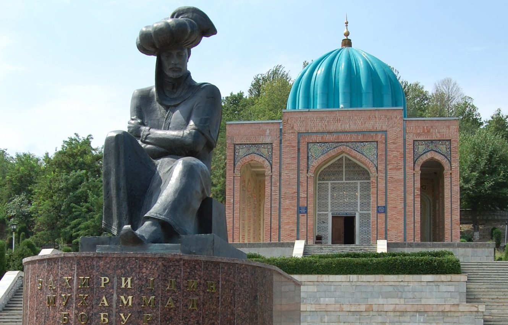

Andijon viloyati
Andijon viloyati — Oʻzbekiston Respublikasi tarkibidagi maʼmuriy-hududiy birlik, viloyat [2]. Fargʻona vodiysining sharqiy qismida joylashgan. 1941-yil 6-martda tashkil etilgan. Maydoni 4,27 ming km². Aholisi taxminan 3,533 million kishi (2026-yil holatiga koʻra). Andijon viloyatida 2 ta viloyatga boʻysinuvchi shahar, 14 tuman, 11 ta tumanga boʻysinuvchi shaharlar, 79 ta shaharchalar, 455 ta Qishloq aholi punktlari bor (2024 yil holatiga). Markazi — Andijon shahri.
